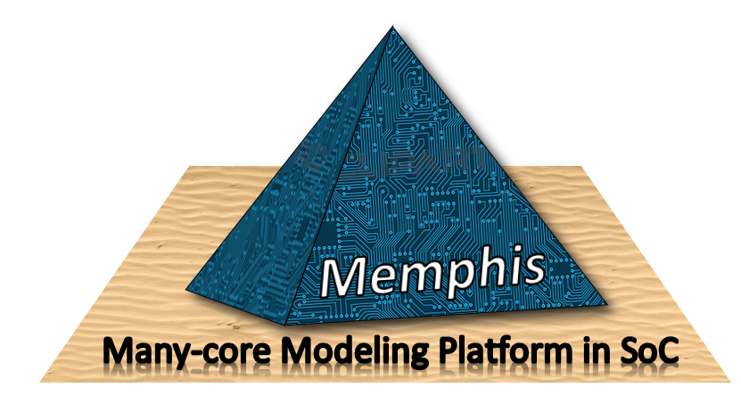
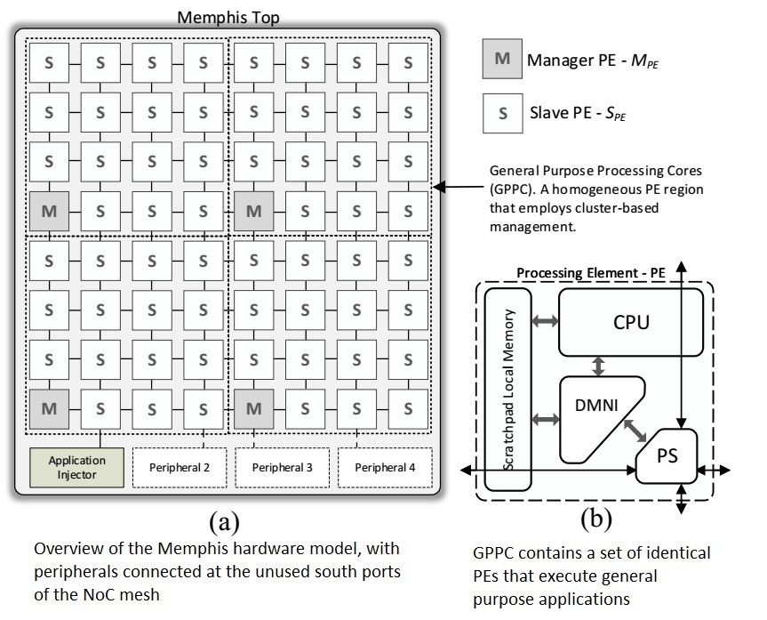
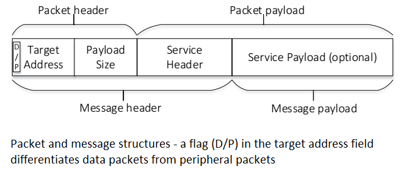
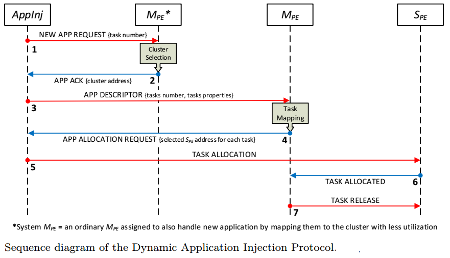

What is Memphis? Memphis stands for Many-coreModeling Platform for Heterogenous SoCs, it is a platform derived from HeMPS. Memphis is a full many-core model (hardware (VHDL, SystemC) + distributed micro-kernel + applications + generation + debug). The chip area is divided in two regions: GPPC (General Purpose Processing Cores) and Peripherals.
Licence: Memphis is an academic/research platform. Therefore it is open-source (GPL). You can download it and test your ideas without prior permission. We only ask to reference Memphis using the following citation:
Marcelo Ruaro, Luciano Lores Caimi, Vinicius Fochi, and Fernando Gehm Moraes, “Memphis: a Framework for Heterogeneous Many-core SoCs Generation and Validation” Design Automation for Embedded Systems, p. 20, 2019.
Step-by-step Installation Tutorial: ThisPDFand this video show a beginner's tutorial starting from a fresh Ubuntu installation until the Memphis running.
Git download link:
Platform Overview

GPPC: The GPPC contains a set of identical PEs that execute general purpose applications. Each PE of the GPPC region:
PE: : The standard version of Mephis adopts the Plasma processor (MIPS-32 bits architecture). A low integration effort is required to replace this processor with a different architecture. Examples of architectures include RISC-V, ARM, MB-Lite. Besides the connection to the local memory, the processor has a connection to the DMNI enabling the management of the data transfers using the NoC;
Local Memory: The local memory is a true dual-port scratchpad memory, storing code and instructions. The goal of using this memory model is to reduce the power consumption related to cache controllers and NoC traffic (transfer of cache lines). If some application requires a larger memory space than the one available in the local memory, it is possible to have shared memories connected to the system, as peripherals;
DMNI: (Direct Memory Network Interface): The DMNI merges two hardware modules: NI (Network Interface) and DMA (Direct Memory Access). The advantage of the DMNI compared to the traditional PE implementation (NI+DMA) is a specialized module that directly connects the NoC router to the internal memory;
NoC Router: Memphis adopts the Hermes Network-on-Chip comprising the the PS (Packet Switching) router of Figure. The main features of the wormhole PS router are: XY routing, round-robin arbitration, input buffering, credit-based flow control.
Peripherals: Peripherals provide I/O interface or hardware acceleration for tasks running on the GPPC region. Examples of peripherals include shared memories, accelerators for image processing, communication protocols (e.g., Ethernet, USB), and Application Injectors (AppInj). The system requires at least one peripheral, the AppInj. This peripheral is responsible for transmitting applications to be executed in the GPPC.

The connection of peripherals is at the mesh NoC boundary ports, due to the benefits of regular floorplanning for the GPPC region, easing the physical synthesis, with peripherals distributed along the GPPC boundary. The NoC router was modified in such a way to enable the communication with boundary ports. Our NoC differentiates data packets from peripheral packets, as depicted in the right Figure.
Data packets are those exchanged by tasks running in PEs, and peripheral packets are those transferred between a task and a peripheral. A peripheral packet arriving in a boundary PE goes to the peripheral, and not to the DMNI. A data packet, from the NoC point of view, has a header and a payload . The packet header contains the target router address and the payload size. From the task point of view, a message contains: (i) message header: encapsulates the packet and service header (e.g., message reception, task mapping, request for a message); (ii) message payload: optional field. It may contain, for example, user data or object code of a task.
Dynamic Application Injection Protocol

Applications may start at any moment in Memphis, characterizing a dynamic workload behavior. To support the dynamic injection of new applications, it is necessary to deploy a protocol enabling the admission of new applications into the system. This subsection details this protocol, which is executed between an AppInj and an MPE. Note that this protocol is generic, and may be deployed by other entities other than an AppInj, as an Ethernet core. Figure 5 depicts the sequence diagram of the protocol.
The process begins with AppInj requesting the execution of a new application, by sending a "NEW APP REQUEST" message to an MPE with the application’s tasks number. The following steps come in the sequence:
the "NEW APP REQUEST" message is addressed to the cluster zero (MPE), which handles this message and selects a cluster to execute the incoming application (this MPE also manages cluster zero). Only one MPE handle those requests because it is necessary to have a global knowledge of the resources’ usage to select where to execute the application requesting execution;
the MPE selects the cluster according to some criterium (e.g., number of available resources or temperature), sending an "APP ACK" message to AppInj, with the MPE address selected to receive the application;
the AppInj sends an "APP DESCRIPTOR" message, with the application task graph in its payload. Upon the reception of this message, the MPE executes the application task mapping. It may be necessary to execute the reclustering protocol before task mapping if the number of the application tasks is greater than the available free pages in the cluster;
after task mapping, the MPE sends an "APP ALLOCATION REQUEST" message to the AppInj, with the tuples ftask ID, SPE addressg. { Step 5: the AppInj transfers the tasks’ object code to the SPEs, sending a "TASK ALLOCATION" message with the task object code in its payload. When a given SPE receive a "TASK ALLOCATION" message, it configures the DMNI to copy the task object code to a selected memory page;
once received the task object code, the SPE sends a "TASK ALLOCATED" message to its MPE. Such message is used by the MPE to control when all application tasks were loaded;
after receiving an amount of "TASK ALLOCATED" messages equal to the application task number, the MPE releases the application to execute by sending a "TASK RELEASE" message to each SPE.
To illustrate the typical cost of this protocol, consider the admission of the MPEG application with five tasks. This protocol took approximately 40,000 clock cycles from the application request up to its execution release (40µs in a system running at 1GHz). Thus, this protocol presents a low overhead to admit new applications.
MA-Memphis: The application-managed Memphis
MA-Memphis is a fork of Memphis that replaces the Cluster-Based Management with a Management Application that runs as an user application. The Management Application can be distributed between various PEs. The main advantage is leveraging the parallelism in management, by pipelining it into observation, decision and actuation tasks. Another possibility is to parallelize the management into functions, i.e., separating, for example, DVFS management from migration management. The Management Application also decouples the management from the operating system, making the kernel lighter and making it easier to add new management functions. For further reading, check the project page in github.